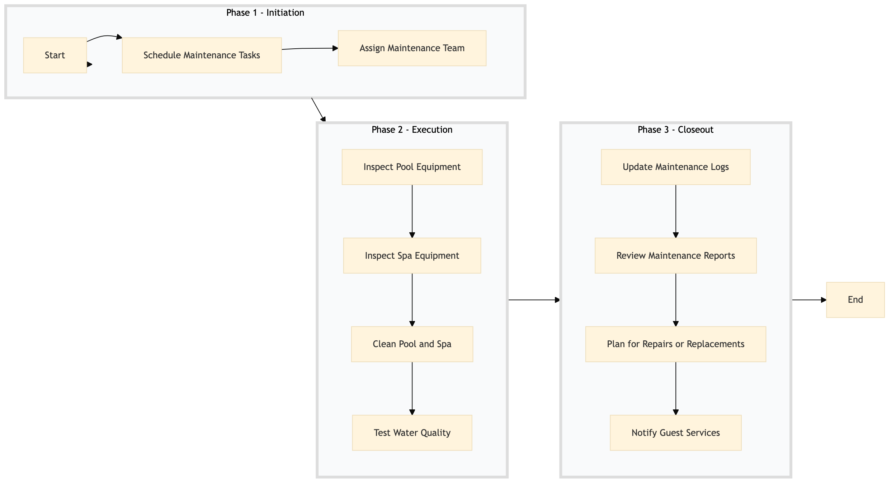

| Role | Steps |
|---|---|
| Facilities & Engineering Manager | 1.1 1.2 3.1 3.2 3.3 3.4 |
| Maintenance Technician | 2.1 2.2 2.3 2.4 |
| Step | Name | Role | System | Input | Output | KPI | Dec? | Exc? | Pain Point / Risk |
|---|---|---|---|---|---|---|---|---|---|
| 1.1 | Schedule Maintenance Tasks | Facilities & Engineering Manager | Oracle OPERA Cloud | Maintenance schedule template | Scheduled maintenance tasks in Oracle OPERA Cloud | Tasks scheduled within 1 hour | N | Y | Overlooking critical equipment due to busy schedules. |
| 1.2 | Assign Maintenance Team | Facilities & Engineering Manager | Oracle OPERA Cloud | Scheduled maintenance tasks | Assigned maintenance team in Oracle OPERA Cloud | Tasks assigned within 30 minutes | N | Y | Inadequate communication leading to missed assignments. |
| 2.1 | Inspect Pool Equipment | Maintenance Technician | Oracle OPERA Cloud | Scheduled maintenance tasks | Inspection report in Oracle OPERA Cloud | Inspection completed within 30 minutes | Y | N | Neglecting thorough inspections due to time constraints. |
| 2.2 | Inspect Spa Equipment | Maintenance Technician | Oracle OPERA Cloud | Scheduled maintenance tasks | Inspection report in Oracle OPERA Cloud | Inspection completed within 30 minutes | Y | N | Neglecting thorough inspections due to time constraints. |
| 2.3 | Clean Pool and Spa | Maintenance Technician | Oracle OPERA Cloud | Inspection report | Cleaning log in Oracle OPERA Cloud | Cleaning completed within 1 hour | N | Y | Using incorrect cleaning chemicals leading to equipment damage. |
| 2.4 | Test Water Quality | Maintenance Technician | Oracle OPERA Cloud | Water quality test kit | Water quality report in Oracle OPERA Cloud | Testing completed within 30 minutes | Y | N | Incorrect water chemistry leading to guest discomfort. |
| 3.1 | Update Maintenance Logs | Maintenance Technician | Oracle OPERA Cloud | Inspection and cleaning reports | Updated maintenance logs in Oracle OPERA Cloud | Logs updated within 30 minutes | N | Y | Omitting critical details from maintenance logs. |
| 3.2 | Review Maintenance Reports | Facilities & Engineering Manager | Oracle OPERA Cloud | Updated maintenance logs | Maintenance report review in Oracle OPERA Cloud | Reports reviewed within 1 hour | Y | N | Overlooking critical issues due to lack of attention. |
| 3.3 | Plan for Repairs or Replacements | Facilities & Engineering Manager | Oracle OPERA Cloud | Maintenance report review | Repair or replacement plan in Oracle OPERA Cloud | Plan completed within 1 hour | N | Y | Delaying repairs due to budget constraints. |
| 3.4 | Notify Guest Services | Facilities & Engineering Manager | Oracle OPERA Cloud | Repair or replacement plan | Notification sent to Guest Services in Oracle OPERA Cloud | Notifications sent within 30 minutes | N | Y | Failing to inform guests about potential disruptions. |
This process ensures regular maintenance of pool and spa equipment to maintain guest satisfaction and operational efficiency at a full-service Marriott hotel.